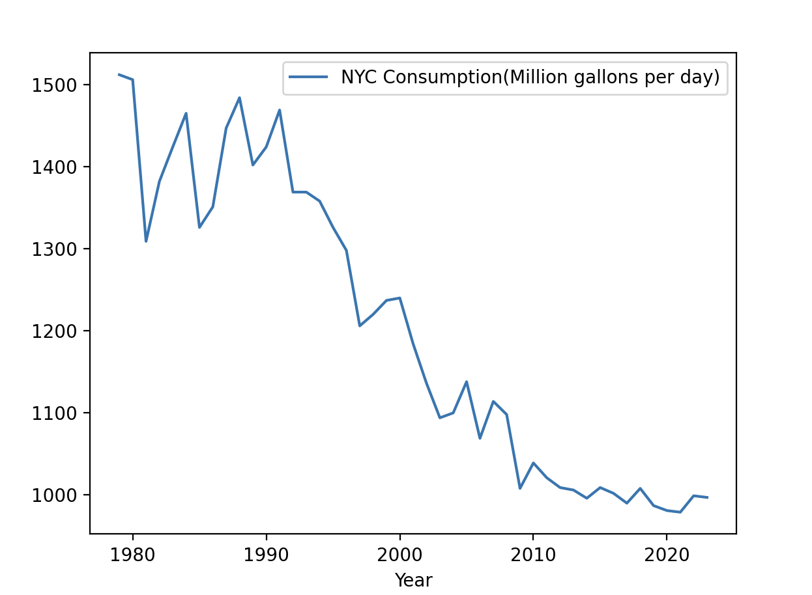

Software tools needed: terminal (command line), web browser and Python programming environment with numpy and matplotlib packages installed.
Software tools needed: web browser and Python programming environment with the pandas and matplotlib packages installed.
See Lab 1 for details on using Python, Gradescope, and Blackboard.
Much of the data collected by city agencies is publicly available at NYC Open Data. Let's use pandas to plot some data from NYC OpenData. Below is a graph of the water consumption in NYC since 1979:

We'll start by downloading the data which can be found here
Click on the EXPORT button on the top right of your screen.
Move your CSV file to the directory that you save your programs. Open with a plain text editor if you would like to see the raw data. Make sure you keep the file extension as .csv as we don't want any extra formatting in the file. Look at the names of the columns since those will correspond to series we can plot.
Now, we can write a (short) program to display daily counts:
import pandas as pd
import matplotlib.pyplot as plt
df = pd.read_csv("water_consumption.csv")
df.plot(x = "Year", y = "NYC Consumption(Million gallons per day)")
plt.show()
The program above assumes that you saved you data as water_consumption.csv. If you saved the data under a different name, alter the program above to use that file.
Save your program and try on your dataset.
Once you have completed the above, see the Programming Problem List.
Python allows you to write programs as scripts: basically, a list of commands that are executed one after the other. You can also organize the programs in functions, which groups commands together that can be reused. Many programming languages (like C++ or Java) require that your programs be organized in functions.
To define function in Python, we use the def command, which has the basic form:
def myFunction(input1, input2, ...):
command1
command2
...
Note that everything indented below the def line is considered part of the function. When you type the function name (followed by parenthesis), it calls (or "invokes") the function, which means it executes all the commands, one after another, that are part of the function.
Let's rewrite our first program, using functions. By tradition (and since it matches the naming protoccol of C & C++), we will call our function main() (see Section 6.8: Using a Main Function):
#Name: your name here
#Date: October 2023
#This program, uses functions, says hello to the world!
def main():
print("Hello, World!")
if __name__ == "__main__":
main()
In Python, we have the option of running our programs as a standalone program, or included as module as part of another program. Since it's common to do either, we include the last two lines of the file, which say if the program is being run directly (which we can test to see if the variable __name__ that is set by Python is __main__), then we call main(). If it's not, then the file is being included in something else, and leaves it to that program to call it.
Save your program and try running it in IDLE.
Now, at the prompt (the window with the lines beginning with >>>), type main(). This calls the function directly. Note that calling the function either way results in the same actions: the commands inside main() are executed.
When you have a running version, see the Programming Problem List.
In addition to IDLE (and other development environments with graphical interfaces), Python can also be used directly from the command line. In fact, this is what the grading scripts do to evaluate your programs, since Gradescope uses a remote cloud server and does not have a graphics window.
To start, we need a command line interface (aka a terminal window). To launch the terminal, click on the terminal window icon in the left menu, or go to search option in the upper left corner and type and then open terminal.
In Lab 1, we launched IDLE from the terminal by typing:
$ idle3
We can use Python in a similar fashion. In a terminal window, change directories to where you stored your hello program above (see Lab 4 for changing directories at the command line).
Let's run your hello program from the command line. If your program is called hello.py, you would type at the command line:
$ python3 hello.pyNotice that the output goes directly to the terminal window. Try running other programs you have written from the command line.